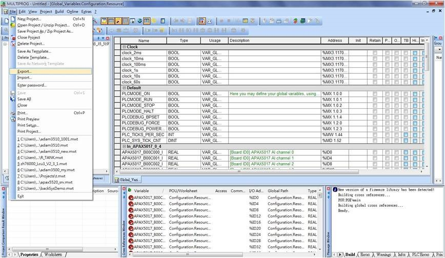
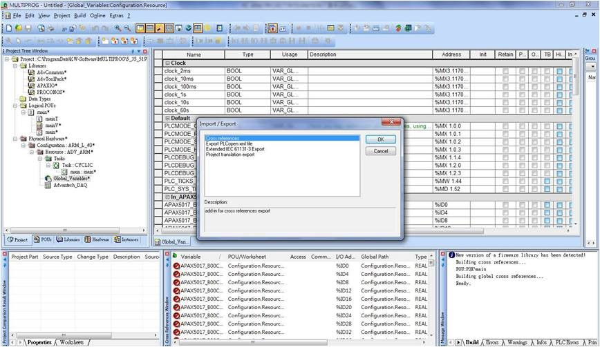
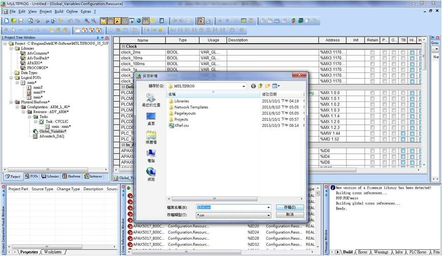

INDUSTRIAL SOFTWARE
Advantech WebAccess
An example of user documentation for software used by Advantech customers.
Import APAX-5000/6000 variables
WebAccess supports importing Advantech APAX-5000 and APAX-6000 series variables, including tag names and tag addresses, from a KW CSV file into the WebAccess database. It automatically converts KW variable addresses to Modbus addresses for real-time data exchange.
Step 1 · Configure the KW CSV
When the I/O configuration and variable settings are complete, follow these instructions to export all global variables.
- Select File and Export to export the I/O information to a CSV file.
- Select Cross reference in the dialog box and click OK.
- Keep the default CSV file type, then specify the file name and path.



SAAS DOCUMENTATION
Ocado SaaS content
An example of documentation authored in Markdown and YAML for a picking application.
---
layout: redirect-url
redirect-url: user-guides/isf-picking-app/pick-bulky
title: "Pick bulky items"
summary: "Learn how to use the picking app to pick bulky items."
minitoc: "yes"
lang: en-us
toc: isf
---When a customer orders a product that is too large to fit in a regular container, it is classed as a bulky item. For picking, bulky items are treated as containers and are given their own barcode.
Bulky items are only suitable for Customer Collection and work only when in-store fulfilment is configured to use SKUs. Bulky item SKUs must be marked as Bulky using the OSP SKU API.
Manage equipment
Before picking bulky items, add a bulky-item picking cart.
- From the Welcome screen, select the menu.
- Select Manage equipment.
- Select New bulky items picking cart.
- Choose an item from the list and select Next.
- Scan the cart barcode and select Next.
- Check the summary and select Confirm.
- Select Add more to add another cart, or select Done.
Pick bulky items
Ensure you have enough printed barcodes before starting. The picking process is:
- Scan the product barcode.
- Attach the picking barcode to the product.
- Scan the picking barcode.
EXPLORE MORE
More writing examples
Browse other parts of my technical writing portfolio.